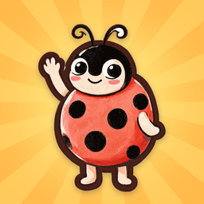
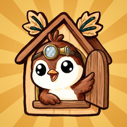

Ruhige, liebevoll gestaltete Spiele für Kinder: ohne Werbung, ohne Zeitdruck, ohne Tracking.
Calm, lovingly made games for children: no ads, no timers, no tracking.

Paare finden mit Pünktchen dem Marienkäfer: ruhig, ohne Werbung, ab 3 Jahren.
Find pairs with Dotty the ladybug: calm, no ads, made for kids aged 3 to 5.

Die Uhr lernen mit Kuki dem Kuckuck: kaputte Uhren reparieren, ohne Werbung, ab 6 Jahren.
Learn to tell time with Kuki the cuckoo: repair broken clocks, no ads, made for kids aged 6 to 8.